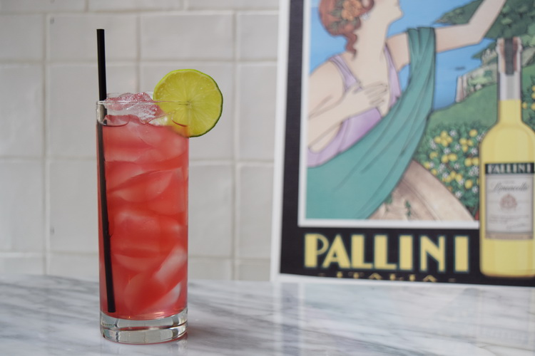

Amalfi Breeze

If you can't actually feel the breezes off the iconic Amalfi coast, the least we can do is offer this cocktail recipe to tide you over until summer!
Created by the experts at Pallini, the Amalfi Breeze cocktail combines traditional Italian limoncello with the tang of citrus vodka and the sweetness of cranberries.
Ingredients
- 1.5 ounces Pallini Limoncello
- 1 ounce citrus vodka
- 2 ounces cranberry juice
- 2 fresh lime wedges
To Enjoy
- Mix all ingredients into an ice-filled glass (we chose a highball!), and finish with a squeeze of fresh lime juice on top. Garnish with a lime wedge, and enjoy!
Return To Homepage
Previous Recipe